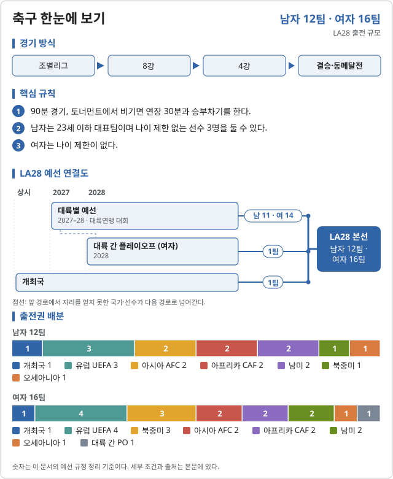
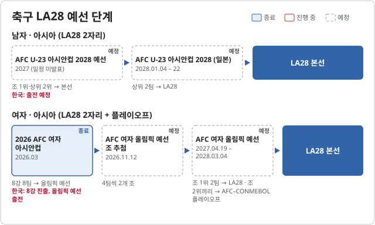

축구 (Football)

LA28 출전 확정 2026-11-06 기준
| 국가 | 경로 | 비고 |
|---|---|---|
| 개최국 | ||
| 2026 CONCACAF U-20 선수권 |
| 국가 | 경로 | 비고 |
|---|---|---|
| 개최국 | ||
| 2025 코파 아메리카 여자 | 우승 | |
| 2025 코파 아메리카 여자 | 준우승 |
남자 아시아 2자리는 2028.01.04–22 일본에서 열리는 AFC U-23 아시안컵으로 정한다.
LA28 예선 단계 2026.10.31 기준


| 단계 | 시기 | 상태 | 다음 단계 | 결과·진출 | 한국 |
|---|---|---|---|---|---|
| AFC U-23 아시안컵 2028 예선 | 2027 (일정 미발표) | 예정 | 조 1위·상위 2위 → 본선 | 출전 예정 | |
| AFC U-23 아시안컵 2028 (일본) | 2028.01.04 – 22 | 예정 | 상위 2팀 → LA28 |
| 단계 | 시기 | 상태 | 다음 단계 | 결과·진출 | 한국 |
|---|---|---|---|---|---|
| 2026 AFC 여자 아시안컵 | 2026.03 | 종료 | 8강 8팀 → 올림픽 예선 | 8강 진출, 올림픽 예선 출전 | |
| AFC 여자 올림픽 예선 조 추첨 | 2026.11.12 | 예정 | 4팀씩 2개 조 | ||
| AFC 여자 올림픽 예선 | 2027.04.19 – 2028.03.04 | 예정 | 조 1위 2팀 → LA28 · 조 2위끼리 → AFC–CONMEBOL 플레이오프 |
남자 본선이 12팀으로 줄어 아시아 자리는 2장이다. 여자는 아시아 2자리에 더해 AFC–CONMEBOL 플레이오프 1자리가 있다.
출처: Wikipedia · LA28 남자 축구 예선 · Wikipedia · 2028 AFC 여자 올림픽 예선
2026 주요 대회 결과 2026-11-07 01:15 KST
위키백과 대회 문서에서 자동으로 모은다. 대회 중에는 한 시간마다 새로 읽는다. 한국 선수가 있는 줄은 붉게 칠했다. 하계 실시간 전체 →
아이치·나고야 아시안게임 아이치·나고야 · 09.19~10.04 종료 결과 2/2종목 · 한국 금1 은0 동1
| 종목 | 금 | 은 | 동 |
|---|---|---|---|
| Medalists | |||
| 남자 tournament | |||
| 여자 tournament | |||
메달 순위:  일본 1-1-0 ·
일본 1-1-0 ·  대한민국 1-0-1 ·
대한민국 1-0-1 ·  북한 0-1-0 ·
북한 0-1-0 ·  중국 0-0-1
중국 0-0-1
출처: 위키백과 Football at the 2026 Asian Games · 2026-11-06 22:37 읽음
예선 규정
| 경로 | 팀 수 | 단위 |
|---|---|---|
| 남자 · 개최국 | 1 | 팀 |
| 남자 · 아시아 · AFC | 2 | 팀 |
| 남자 · 아프리카 · CAF | 2 | 팀 |
| 남자 · 북중미 · Concacaf | 1 | 팀 |
| 남자 · 남미 · CONMEBOL | 2 | 팀 |
| 남자 · 오세아니아 · OFC | 1 | 팀 |
| 남자 · 유럽 · UEFA | 3 | 팀 |
| 여자 · 개최국 | 1 | 팀 |
| 여자 · 아시아 · AFC | 2 | 팀 |
| 여자 · 아프리카 · CAF | 2 | 팀 |
| 여자 · 북중미 · Concacaf | 3 | 팀 |
| 여자 · 남미 · CONMEBOL | 2 | 팀 |
| 여자 · 오세아니아 · OFC | 1 | 팀 |
| 여자 · 유럽 · UEFA | 4 | 팀 |
| 여자 · 대륙 간 플레이오프 | 1 | 팀 |
예선 일정
| 대회 | 기간 | 장소 |
|---|---|---|
| 2026 CONCACAF W 챔피언십 | 2026 | 미정 |
| 2027 UEFA 여자 네이션스리그 | 2027 | 미정 |
| 대륙 예선 (여자) | 2027–2028 | 미정 |
직전 올림픽 메달리스트
| 세부종목 | 금 | 은 | 동 |
|---|---|---|---|
| 남자 | 스페인 | 프랑스 | 모로코 |
| 여자 | 미국 | 브라질 | 독일 |
대한민국
확보 쿼터: 미정. 예선 결과 발표 후 갱신한다.